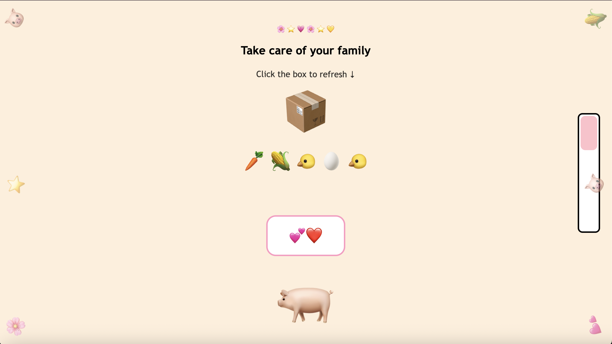
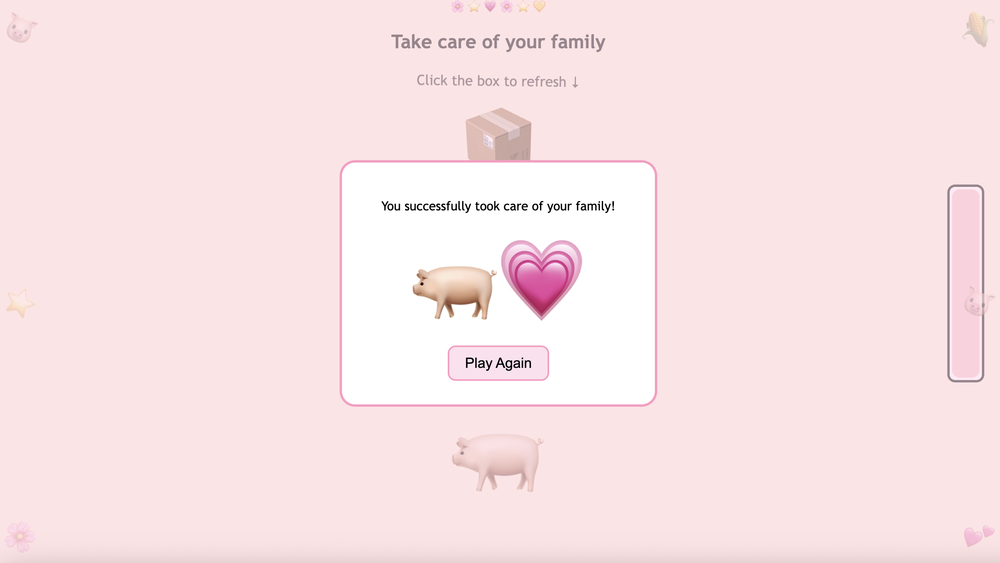

Digital Family
Pick a little friend to take care of 💛 →
Digital Family is an interactive web project where users choose a small digital companion to take care of. Each character represents a simple form of companionship that exists within a digital environment.
Through a playful interface, users can select a character and begin interacting with it. The project explores how people form emotional connections with digital objects and characters, even when those relationships exist only on a screen.
By presenting the idea of an “electronic family,” the project invites viewers to think about how companionship, care, and attachment can also appear in digital spaces.


